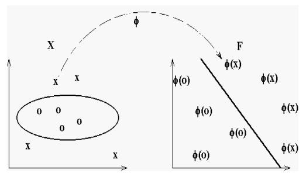
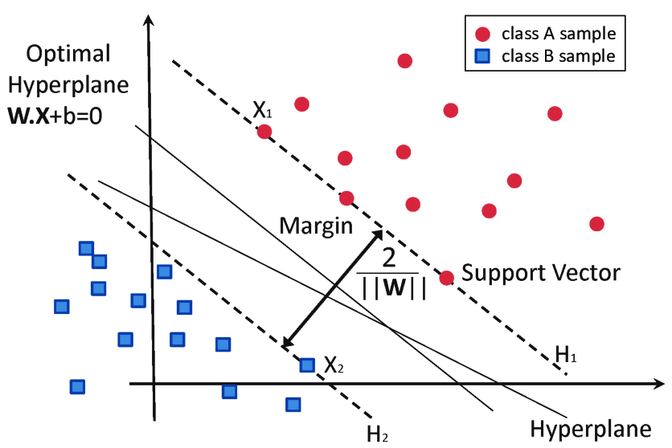
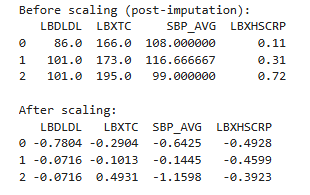
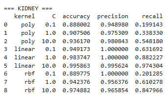
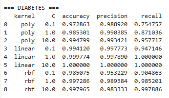
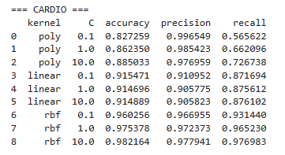
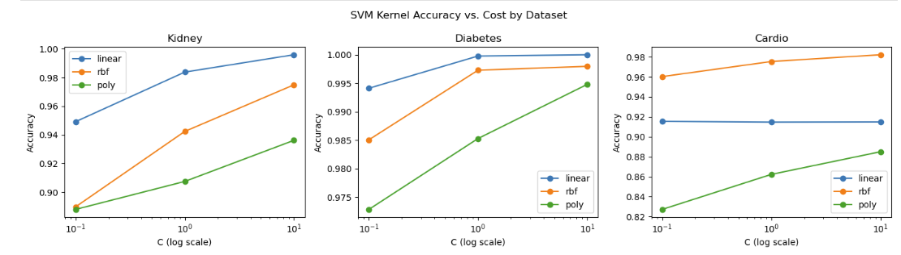
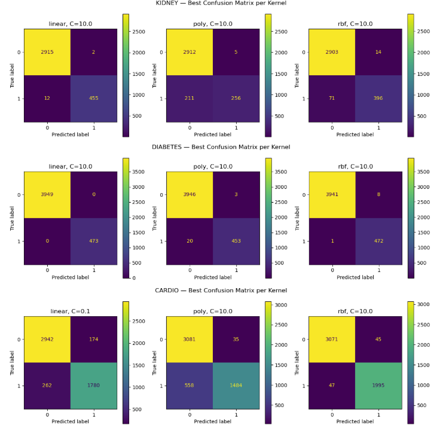

Support Vector Machines (SVMs)
(a) Overview
Support Vector Machines (SVMs) are supervised learning models designed to separate data into categories by identifying the optimal decision boundary, known as a hyperplane. SVMs function as linear classifiers by maximizing the margin between the hyperplane and the closest data points from each class, referred to as support vectors. By creating the largest possible margin, SVMs aim to improve classification performance and generalization on unseen data.One limitation of a standard linear classifier is that some datasets contain overlapping or nonlinear classes that cannot be separated well using a single straight line. In these cases, a linear boundary would result in many misclassifications. This highlights the need for support vector machines, as the kernel treats the data as though it has been mapped into a higher-dimensional space. From this, a support vector classifier can be made to best separate the data.
Kernels work by implicitly lifting the data into a higher-dimensional space, assisting in finding the best data transformation to do so. However, kernels are not actually applying or computing these transformations on the actual data coordinates, rather using the kernel trick to compute this on the dot product of the coordinates, making it much less computationally expensive. The SVM calculation uses pairs of data points in the form of dot products, and the kernel function computes this dot product relationship.The dot product plays a key role in kernel methods because SVMs rely on measuring the relationships between pairs of data points. Rather than explicitly transforming every observation into a higher-dimensional space, a kernel function can directly compute the dot product as if that transformation had already occurred. This allows SVMs to capture complex patterns in the data while avoiding the large computational cost of calculating and storing all of the transformed features.
The polynomial kernel aims to compute the higher-dimensional relationship between pairs of observations without explicitly creating the transformed features. It is defined as . K(x, z) = (x · z + r)d where (x · z ) is the dot product between two observations, (r) is a constant that shifts the polynomial, and (d) is the degree of the polynomial. As the polynomial degree increases, the SVM makes increasingly complex boundaries for the hyperplane. To illustrate the polynomial kernel, consider a two-dimensional point x=(2,3). Using a polynomial kernel with r=1 and d=2, the point is treated as if it were mapped into a higher-dimensional space: (2,3)→(1,2,3,4,6,9). Instead of actually creating all of these new features, the polynomial kernel uses the kernel trick to compute the dot products directly. This lets the SVM work as if the data had been transformed into a higher-dimensional space, making it much easier to separate data that wasn't linearly separable before.
Another kernel used is the Radial Basis function (RBF) kernel, also called the Gaussian kernel. The RBF measures similarity between observations based on the distance between them. It uses neighboring points to influence the classification of the focused data point. It is defined as K(x, z) = e−γ ||x − z||2 where γ controls how quickly similarity decreases as the distance between two observations increases. Small values of γ produce smoother, more generalized decision boundaries, while larger values allow the model to create increasingly flexible boundaries. When the relationship between features and classes are highly nonlinear, the flexibility from RBF provides an advantage.
As a simple example, consider the point (x=(1,2)). If we compare it to the nearby point (z=(2,2)), the RBF kernel produces a value close to 1 because the two points are very similar. However, if we compare (x=(1,2)) to a much farther point such as (z=(8,9)), the kernel value is much closer to 0, indicating very little similarity. Rather than creating new polynomial features, the RBF kernel classifies observations based on how similar they are to nearby points, allowing it to create flexible nonlinear decision boundaries.
Polynomial Kernel
K(x,z) = (x·z + r)d
Radial Basis Function (RBF)
K(x,z)=exp(-γ||x-z||²)

Figure 1. Polynomial kernel - Wikipedia.

Figure 2. Support Vector Machines - Hyperplane and Margins (Medium).
(b) Data Preparation
To apply SVM, two aspects of data cleaning were first applied, including handling missing data (or NHANES encodings). Each NHANES dataset was examined to verify this, and outputs revealed that no coded missing values remained, and any missing values were replaced using median imputation. The processed datasets also contained no missing values, ensuring that scikit-learn SVM could be implemented.
Support vector machines require labeled data for training, specifically a set of input features (predictors) and a target (class). During training, the SVM creates a boundary that best separates the labeled classes. The model learns from known target outcomes, so unlabeled data cannot be used for supervised classification. For this project, all three NHANES datasets were used to classify risk of CKD, diabetes, and CVD. Each dataset consisted entirely of numeric biomarker measurements. Identifier columns (SEQN) were removed, as they do not provide useful information for disease prediction.
The biomarker features included were also used as inputs for decision trees. These include: Kidney Disease: serum creatinine (LBXSCR), blood urea nitrogen (LBXSBU), serum albumin (LBXSAL), phosphorus (LBXSPH), potassium (LBXSKSI), urine albumin (URXUMA), urine creatinine (URXUCR), and albumin-to-creatinine ratio (URDACT). Diabetes: HbA1c (LBXGH), fasting glucose (LBDGLUSI), HDL cholesterol (LBDHDD), and insulin (LBXIN). Cardiovascular Disease: HDL cholesterol (LBDHDD), triglycerides (LBXTR), and average diastolic blood pressure (DBP_AVG). The cardiovascular label was created using established clinical thresholds for LDL cholesterol, total cholesterol, systolic blood pressure, and high-sensitivity C-reactive protein (hs-CRP).
SVMs can be sensitive to outliers and feature magnitude, so predictor variables were standardized using StandardScaler. This transforms each feature to have a mean of zero and a standard deviation of one, preventing any single feature from dominating the hyperplane. To prevent information leakage, the scaler was fit on the training data and then applied to the testing data.
Each dataset was split into disjoint training (60%) and testing (40%) sets using a stratified train-test split to preserve class proportions in both subsets. The sets must remain disjoint because the training set is used to learn class boundaries, while the testing set is reserved for evaluating model performance on unseen data.
Dataset Links
Snippet of Cardio Data Before Standardizing (after imputation) and Snippet after

(c) Code
SVM classification was implemented in python using the scikit-learn library across the three NHANES biomarkers data sets. The run_svm function handles test/training splitting, normalization, model fitting, and returns many metrics including accuracy, precision, recla, F1, raw predictions and and confusion matrix. Three kernels (linear, RBF, and polynomial) were each evaluated at three cost values (0.1, 1, 10) with results collected into a dataframe via loop over datasets dictionary (from raw predicitons). Two visuals were implemented, including confusion matrix (using ConfusionMatrixDisplay) and kernel performance over the differing cost values was placed on a line plot.
Notebook:
(d) Results
Three NHANES biomarker datasets were used for SVM classification: kidney (8,458 samples, 13.8% CKD positive), diabetes (11,053 samples, 10.7% diabetic), and cardio (12,895 samples, 39.6% at-risk). Each dataset was median-imputed, then features were standardized with StandardScaler before fitting. Three kernels were evaluated (linear, RBF, and polynomial ) across three cost values (C = 0.1, 1, 10), leaving nine models per dataset and 27 models total.
Cost and Kernel Results
The cost parameter C places constraints on the SVM's penalities for misclassification. A low cost allows more cost misclassfication in exchange for a more general / wide margin. A higher cost value forces the model to classify more points correctly, tightening the margin. In practice, the higher C value consistently improved performace across all three kernels, suggesting these datasets do not contain too much noise to worry about overfitting in the range of C values 0.1 - 10.

The linear kernel dominated the kidney dataset, as seen when C = 10, it achieved 99.6% accuracy and 97% recall. This means the model performed well at findings the true positive cases, which os important in clinical settings as false negatives could lead to higher consequences. The polynomial kernel performed poorly at C = 0.1, catching only 19% of CKD cases despite 95% precision, showing it was conservative in labeling someone as CKD positive. RBF was in between the two, reaching 84% recall at C=10.

All kernels performed very well on the diabetes dataset, with the lienar kernel at C=10 having 100% correct classification. The nearly perfect separability suggests the four diabetese feature (HbA1c, fasting lgucose, HDL, and insulin) form a nearly linearly separable boundary between at-risk and not-at-risk groups. HbA1c and fasting glucose alone are the clinical diagnostic criteria for diabetes, so this result is expected and validates the feature selection. At C=1, linear achieved 99.97% accuracy and 100% recall with only 1 false positive, which is essentially perfect. Even the polynomial kernel at C=0.1 reached 75.5% recall with 97.3% accuract, still performing very well with the weakest configuration.

The cardio dataset produced strong results across all kernels. RBF was the clear winner on the cardio dataset, hitting 98.2% accuracy and 97.7% recall at C=10 , in practical terms, it only missed roughly 2-3% of patients who were actually at risk. An interesting aspect is that unlike the other two datasets, RBF remains the best performing kernel rather than linear.
Visualizations

The line plot shows panels for the three datasets: kidney, diabetes, and cardio, each with accuracy on the y-axis and C on a log scale on the x-axis. The kidney and diabetes show all three kernels have clear upward slopes, meaning performance does improve as C increases (though diabetes remains fairly high throughout). For these two datasets, the linear kernel starts the highest and finishes the highest, while RBF substantially improves as C increases. The polynomial kernel also improves a lot, but from a lower baseline. Polynomial also improved as C increased, but it never quite caught up, plateauingout at 88.5% accuracy and 72.7% recall. Another thing worth noting is that RBF kept getting better across the full C range tested, unlike kidney and diabetes where performance leveled off fairly quickly, suggesting that at C=10, the cardio model was still finding useful structure and likely hadn't fully converged yet.
For the cardio dataset, all three lines are nearly horizontal. The flatness supports that the SVM boundary is not improving with further regularization, indicating that the data is the limitation of the model, less so the model configurations.

Top left region: true negative, correctly predicted no disease. Top right: false positive, predicted disease in a healthy person. Bottom left: false negative, predicted healthy in a person that actually has the disease. Bottom right: true positive, correctly predicted the disease.
For Kidney at C=10: Linear kernel's (2915, 2, 12, 455) is the best, only 12 FN means almost no missed CKD cases, and only 2 FP means almost no false alarms. The polynomial kernel's (2912, 5, 211, 256) shows a large FN count, meaning it misses 211 CKD patients. RBF's (2903, 14, 71, 396) is intermediate.
For Diabetes at C=10: Linear's (3949, 0, 0, 473) is essentially perfect. Poly's (3946, 3, 20, 453) misses 20 diabetics. RBF's (3941, 8, 1, 472) misses only 1 diabetic but produces 8 false positives.
Looking at the cardio confusion matrix at best C per kernel: RBF at C=10 had the strongest performance with very few misses across both classes, linear at C=1 caught most at-risk patients but produced a noticeable number of false positives, and polynomial at C=10 had high precision but still missed a substantial portion of true positives, which lines up with the pattern of polynomial being conservative about calling anyone at-risk that was seen across all three datasets.
Kernel Comparison Summary
Linear was the best overall kernel, outperforming RBF and polynomial on kidney and diabetes. RBF was the best on cardio and showed consistent, reliable improvement with C across all datasets. However, polynomial was consistently the weakest, converging slowly at low C and tends towards high precision but poor recall. This suggests it is overly conservative about predicting positive cases. If choosing a single kernel for these NHANES datasets, linear is the clear choice for the kidney and diabetes classifications, while RBF is preferred for cardio.
(e) Conclusions
The kidney dataset produced the strongest classification results, which is reasonable given the features involved; serum creatinine, BUN, and the albumin-to-creatinine ratio are not just associated with CKD, they reflect the actual mechanics of how kidneys fail. When filtration breaks down, these markers move together in ways that are direct and measurable, so it is not surprising that a linear boundary was enough to separate CKD from non-CKD patients almost perfectly. The clean separability here suggests these biomarkers capture disease state early and distinctly, which is part of what makes them clinically useful in the first place.
The diabetes result is similarly strong and similarly interpretable: HbA1c and fasting glucose are the literal clinical criteria for a diabetes diagnosis, so the near-perfect linear classification reflects that the label was largely derived from these same features. It does confirm that the data pipeline is working as expected, but more so a demonstration of cosistency than a predictive finding.
The cardiovascular dataset needed RBF to perform very well, while a linear kernel was enough for the others. It suggests the relationship between LDL, total cholesterol, systolic BP, and CRP does not separate into a clean boundary the way kidney filtration markers or glucose and HbA1c do. Cardiovascular risk is not driven by any single marker crossing a threshold; it emerges from how these markers interact with each other. Elevated CRP on its own means something different than elevated CRP alongside high LDL, and a linear kernel simply cannot capture that kind of interaction. The fact that RBF got to 98.2% accuracy at C=10 tells us the signal is genuinely there in the data, it just may require a more flexible model.
For the broader disease pathway question, this is a telling result. Kidney dysfunction and glucose dysregulation look like upstream, mechanistically direct processes that leave clean signatures in biomarker space. Cardiovascular risk looks more like a downstream outcome that accumulates from combinations of metabolic and inflammatory stress, which is a clinically expected outcome through the mechanics of cardiovascular disease.